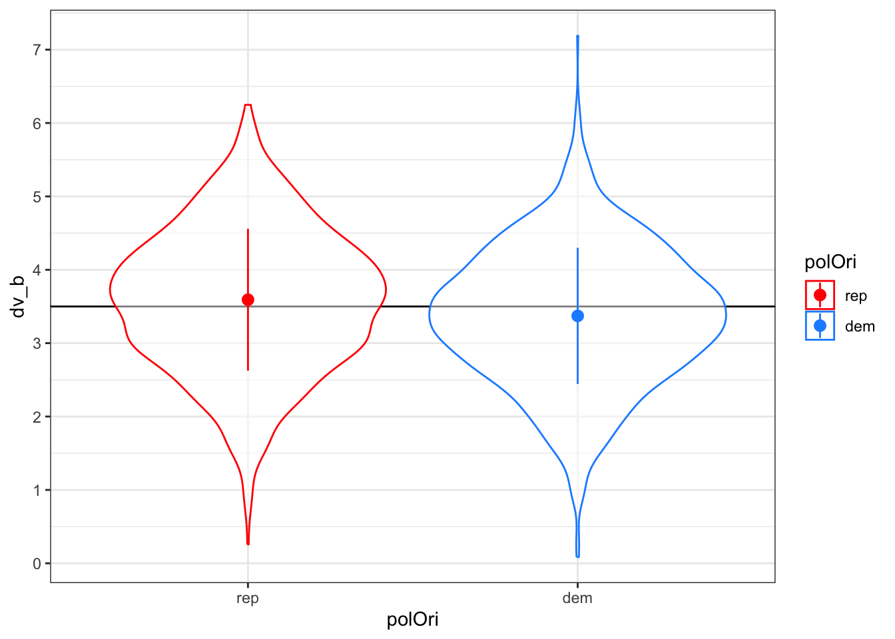
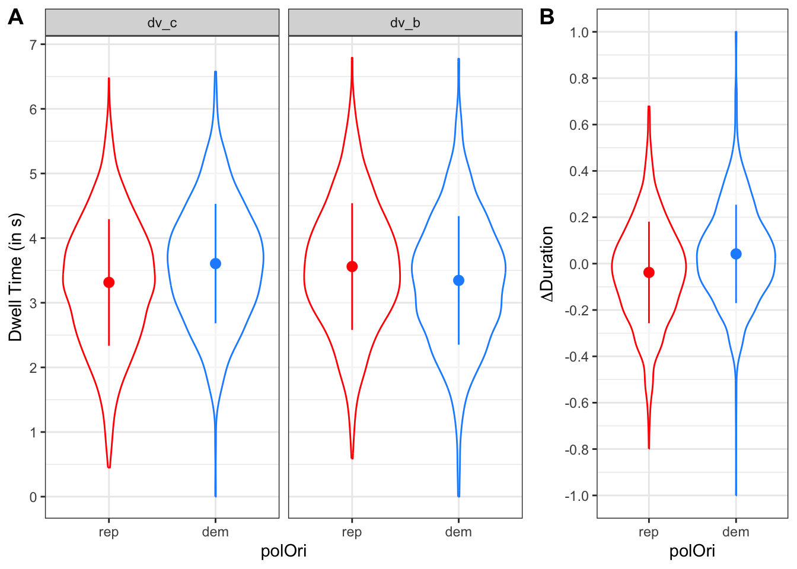

For a range of potential parameters, a sample size of 400 subjects and 25 items should provide 95% power to detect a true smallest-effect size-of-interest (SEOI)-sized effect of political orientation on \(\Delta Duration\).
Confidence in this estimate should be high enough to ask different research panel providers to offer initial estimates of costs.
The provided simulations and power analyses will probably not suffice for a well-grounded justification of sample size for a registered report (too many degrees of freedom for all parameters). Only a pilot study will provide justified assumptions for parameters (especially random effects).
In our mouselabWEB study, subjects repeatedly gather information regarding carbon or bonus outcomes of two choice options (A or B) by hovering over boxes hiding this information. We use a composite variable representing relative time spent gathering carbon and bonus information as primary dependent variable (\(\Delta Duration\), with \(t = DwellTime_{A} + DwellTime_{B}\))1:
The primary predictor of interest is subjects’ political orientation (republican vs. democrat, between-subject factor). The individual choice situations (items) differ in their relative difference in carbon and bonus outcomes between options A and B.2 The key question is whether there is any difference in the relative time spent gathering carbon compared to bonus information between subjects identifying as democrats vs. republicans.
In order to conduct an a priori power analysis without any pilot data, we need to simulate data.
2 Simulation of \(\Delta Duration\)
Simulating \(\Delta Duration\) requires us to think thoroughly about the data generating process that we suspect will be responsible for bringing about the values we are going to measure. In what follows, we reason that \(\Delta Duration\) will be driven by subjects’ political orientation by means of two processes. First, democrats will spend more time on looking on carbon information than republicans. Second, democrats will spend less time on looking on bonus information than republicans. Based on these opposing processes, we expect to find that democrats will display greater \(\Delta Duration\) values than republicans. More specifically, democrats on average will be marked by positive \(\Delta Duration\) values, whereas republicans will be marked by negative \(\Delta Duration\) values.
We will model these two proposed processes in two seperate simulation functions. In a third function, we will combine data generated by these two functions in order to simulate the generation of \(\Delta Duration\) values. These simulated \(\Delta Duration\) values will then lay the groundwork for our power analyses.
In all our simulation functions, we will adhere to the following naming conventions to designate model parameters and sampled values:
beta_*: fixed effect parameters
subj_*: random effect parameters associated with subjects
item_*: random effect parameters associated with items
X_*: effect-coded predictor
S_*: sampled values for subject random effects
I_*: sampled values for item random effects
We will use letter abbreviations to designate fixed and random effects:
*_0_*: intercept
*_p_*: political orientation
*_c: carbon information
*_b: bonus information
Other terms:
*_rho_*: correlations; a vector of the upper right triangle for the correlation matrix for that group’s random effects
n_*: sample size
sigma: residual (error) sd
2.1 Simulation Functions
2.1.1 Simulate Dwell Time on Carbon Information
We first need to simulate data representing how much time participants spend on gathering information regarding carbon outcomes. The choice for the default parameter values is justified as follows:
n_subj: Number of subjects. By default, we simulate data coming from 100 subjects. This seems to be a reasonable starting point for our simulations. Variations on sample size and its effects on power will be the topic of our power analyses.
n_subj_prop: Proportion of republican and democrat subjects. The first number represents the proportion of republicans and the second the number of democrats (Their sum needs to add up to 1). By default, we expect a balanced proportion (c(0.50, 0.50)) since we are aiming for a balanced sample. Variations on this assumption could be tested in our power analyses.
n_item: Number of unique items in the Carbon Emission Task. As in the original Carbon Emission Task (Berger and Wyss 2021), we are planning on using a fully crossed design combining 5 levels of relative carbon outcome differences (10%, 15%, 20%, 50%, and 100%) and 5 levels of relative bonus outcome differences (same levels) between options A and B, that is 25 items. In principle, this number could be changed as well. In order to keep the structure of a fully crossed design, the number of trials should be the square of the number of levels of relative differences we would like to use (e.g., 9, 16, 25, 36, …)
beta_0_c: Fixed intercept (grand mean) for dwell time. This value represents the number of seconds that subjects over all (irrespective of political orientation) spend on gathering carbon information in each choice situation (the effect of political orientation will be modeled as deviation from this grand mean). In a previous mouselabWEB study that follows a similar design (two options with two attributes) to study intertemporal choice (Reeck, Wall, and Johnson 2017), study authors reported that subjects on average spent 7.3 seconds (SD = 1.1) acquiring information and making a decision. Based on this information, we define our defaults based on the expectation that subjects in total spend about 7 seconds for each choice. As a starting point, we simulate that subjects over all (irrespective of political orientation) spend about half of this time (3.5 seconds) on gathering carbon outcome information.
beta_p_c: Fixed effect of political orientation on dwell time: This value represents the difference in average dwell times on carbon information between democrats and republicans (democrats - republicans). Coming up with a well-informed expectation of this effect is very difficult since no previous studies investigated the effect of political orientation on such information-seeking processes in a task with real environmental consequences. We therefore base our default value on a smallest effect size of interest informed by theoretical considerations (Lakens 2022). In mouselabWEB studies, it is a standard practice to filter out any information acquisition lasting less than about 200 msec because such very short (spurious) acquisitions are very unlikely to be consciously processed (Willemsen and Johnson 2019). Thus, we define 0.2 seconds as a default difference in dwell time between democrats and republicans that could likely still reflect differences in conscious information gathering processes. Of course, we can study how varying this difference affects our power.
subj_0_c: By-subject random intercept SD for dwell time: We simulate that a subject’s deviation from the grand mean for dwell time follows a normal distribution with a mean of 0 and a standard deviation of subj_0_c. Again, hypothesizing what this standard deviation will be, is very difficult. We base our default value on values reported in Reeck, Wall, and Johnson (2017). They investigated whether variability in information search behavior is driven predominantly by differences in the features of a choice (e.g., in our case: the relative differences between carbon and bonus outcomes in options A and B) or by individual differences. To this end, they predicted information acquisition using a intercept-only model that included random intercepts for subjects and items.3 They estimated the random intercept of subjects to be 0.29 (95%-CI = 0.26-0.32). The estimated random intercept for items was 0.04 (95%-CI = 0.02-0.06). That is, the subject random effect was about 6 times higher than the item random effect, demonstrating that individual differences played a more important role in determining search behavior than the features of the options being presented. Therefore, we set our default value for the by-subject random intercept SD (0.25, i.e. 7.25% of the fixed intercept)4 to be about six times the size of the by-item random intercept (0.04, see below).
subj_p_c: By-subject random slope SD for dwell time: Most probably, the effect of political orientation on carbon information dwell time will differ between participants. The distribution of this random slope is difficult to guess a priori given the sparse previous literature that could inform our study. As a (conservative) default, we model the SD of the random slope to be as big as the fixed effect itself, i.e. 0.20. That is, we expect that for about 2/3 of subjects, the effect of political orientation lies between 0.2 - 0.2 = 0 and 0.2 + 0.2 = 0.4.
subj_rho_c: By-subject random effects correlation: Since we model that not only the fixed intercept but also the fixed effect of political orientation can vary between subjects, it is possible that subjects’ random intercepts and slopes are correlated. For simplicity’s sake, however, we will assume no correlation (0.00). Note, however, that such correlations could easily be modeled as well – and there might be good reason to do so.5
item_0_c: By-item random intercept SD for dwell time: Based on considerations explained above, we set this value to (1/6)*subj_0_c = 0.04.
sigma_c: Trial-level noise (error) SD: Following suggestions by DeBruine and Barr (2021), we model this error standard deviation to be twice the size of the by-subject variance components, i.e., to 2*(0.25 + 0.2) = 0.9.
Show the code
# set up the custom data simulation function for dwell time carbonFUN_sim_dwellTimeCarbon <-function(n_subj =100, # number of subjectsn_subj_prop =c(.5, .5), # proportion of republican and democrat subjectsn_item =25, # number of itemsbeta_0_c =3.5, # intercept (grand mean) for dwell time (dt) carbonbeta_p_c = .20, # effect of political orientation on dt carbonsubj_0_c = .25, # by-subject random intercept sd for dt carbonsubj_p_c = .20, # by-subject random slope sd for dt carbonsubj_rho_c = .00, # by-subject random effects correlations for dt carbonitem_0_c = .04, # by-item random intercept sdsigma_c = .9, # residual (error) sdoptions =list(truncNegNums =FALSE# set negative numbers to zero (no negative dwell times) )) {# simulate data for dwell time on carbon information dat_c <-# add random factor subjectadd_random(subj = n_subj) %>%# add random factor itemadd_random(item = n_item) %>%# add between-subject factor political orientation (with anova contrast)# note that it is important that we set .shuffle = FALSE. This way, the first n_subj_prop# will be assigned polOri = rep and the rest will be assigned polOri = dem.# if we do not follow this procedure, then it can and will happen that in the# FUN_sim_dwellTimeBonus the same subject is assigned a different political orientation!add_between("subj", polOri =c("rep", "dem"), .prob = n_subj_prop*n_subj, .shuffle =FALSE) %>%add_contrast("polOri", colnames ="X_p", contrast ="anova") %>%# add by-subject random intercept and slopeadd_ranef("subj", S_0_c = subj_0_c, S_p_c = subj_p_c, .cors = subj_rho_c) %>%# add by-item random interceptadd_ranef("item", I_0_c = item_0_c) %>%# add error termadd_ranef(e_si_c = sigma_c) %>%# add response valuesmutate(# add together fixed and random effects for each effectB_0 = beta_0_c + S_0_c + I_0_c,B_p = beta_p_c + S_p_c,# calculate dv by adding each effect term multiplied by the relevant# effect-coded factorsdv_c = B_0 + (B_p * X_p) + e_si_c )# truncuate negative numbers?if (options$truncNegNums) { dat_c <- dat_c %>%mutate(dv_c =ifelse(dv_c <0, 0, dv_c)) }# run a linear mixed effects model and check summary mod_c <-lmer( dv_c ~ polOri + (1+ polOri | subj) + (1| item),data = dat_c ) mod_c.sum <-summary(mod_c)# check groups tab_groups <- mod_c.sum$ngrps %>%as_tibble(rownames ="Random.Factor") %>%mutate(parameters =c(n_subj, n_item))# check random effects tab_ranef <- mod_c.sum$varcor %>%as_tibble() %>%select(Groups = grp, Name1 = var1, Name2 = var2, "Std.Dev."= sdcor) %>%mutate(parameters =c(subj_0_c, subj_p_c, subj_rho_c, item_0_c, sigma_c))# check fixed effects tab_fixef <- mod_c.sum$coefficients %>%as_tibble(rownames ="Effect") %>%select(Effect, Estimate) %>%mutate(parameters =c(beta_0_c, beta_p_c))# combine these checks in one list list_checks <-list(groups = tab_groups,random_effects = tab_ranef,fixed_effects = tab_fixef )# create plot to check simulation plot_dat_c <- dat_c %>%ggplot(aes(x = polOri, y = dv_c, color = polOri)) +geom_hline(yintercept = beta_0_c) +geom_violin(alpha = .5) +stat_summary(fun = mean,fun.min = \(x){mean(x) -sd(x)},fun.max = \(x){mean(x) +sd(x)} ) +scale_y_continuous(breaks = scales::pretty_breaks(n =10)) +scale_color_manual(values =c("red", "dodgerblue")) +theme_bw()return(list(data = dat_c,model_lmer = mod_c,checks = list_checks,plot = plot_dat_c ))}
Let’s have a look at the simulated data. First, let’s have a look at Figure 1, displaying the distribution (violin plot) and mean ± 1 standard deviation (dot ± error bars) for republicans and democrats. The true population mean is indicated by the horizontal line.
Show the code
out_fun_sim_dwellTimeCarbon <-FUN_sim_dwellTimeCarbon(n_subj =100, # number of subjectsn_subj_prop =c(.5, .5), # number of republican and democrat subjectsn_item =25, # number of itemsbeta_0_c =3.5, # intercept (grand mean) for dwell time (dt) carbonbeta_p_c = .20, # effect of political orientation on dt carbonsubj_0_c = .25, # by-subject random intercept sd for dt carbonsubj_p_c = .20, # by-subject random slope sd for dt carbonsubj_rho_c = .00, # by-subject random effects correlations for dt carbonitem_0_c = .04, # by-item random intercept sdsigma_c = .9, # residual (error) sdoptions =list(truncNegNums =FALSE# set negative numbers to zero (no negative dwell times) ))out_fun_sim_dwellTimeCarbon$plot
Figure 1: Distribution of dwell times on carbon outcomes (dv_c).
Next, we compare the estimated values and population (i.e., “true”) parameters:
Next, we need to simulate data representing how much time participants spend on gathering information regarding bonus outcomes. The choice for the default parameter values is justified as above. Most important difference: beta_p_b is negative as we expect that compared to republicans, democrats spend less time on gathering bonus information. Specifically, we reason that republicans spend the time they “save” in looking at carbon information (reduced dwell time on carbon information compared to democrats) on looking at bonus information, i.e., beta_p_b = -beta_p_c = -0.20.
Show the code
# set up the custom data simulation function for dwell time bonusFUN_sim_dwellTimeBonus <-function(n_subj =100, # number of subjectsn_subj_prop =c(.5, .5), # number of republican and democrat subjectsn_item =25, # number of itemsbeta_0_b =3.5, # intercept (grand mean) for dwell time (dt) bonusbeta_p_b =-.20, # effect of political orientation on dt bonussubj_0_b = .25, # by-subject random intercept sd for dt bonussubj_p_b = .20, # by-subject random slope sd for dt bonussubj_rho_b = .00, # by-subject random effects correlations for dt bonusitem_0_b = .04, # by-item random intercept sd for dwell time bonussigma_b = .9, # residual (error) sd for dwell time bonusoptions =list(truncNegNums =FALSE# set negative numbers to zero (no negative dwell times) )) {# simulate data for dwell time on carbon information dat_b <-# add random factor subjectadd_random(subj = n_subj) %>%# add random factor itemadd_random(item = n_item) %>%# add between-subject factor political orientation (with anova contrast)# note: see comment on .shuffle = FALSE in FUN_sim_dwellTimeCarbonadd_between("subj", polOri =c("rep", "dem"), .prob = n_subj_prop*n_subj, .shuffle =FALSE) %>%add_contrast("polOri", colnames ="X_p", contrast ="anova") %>%# add by-subject random intercept and slopeadd_ranef("subj", S_0_b = subj_0_b, S_p_b = subj_p_b, .cors = subj_rho_b) %>%# add by-item random interceptadd_ranef("item", I_0_b = item_0_b) %>%# add error termadd_ranef(e_si_b = sigma_b) %>%# add response valuesmutate(# add together fixed and random effects for each effectB_0 = beta_0_b + S_0_b + I_0_b,B_p = beta_p_b + S_p_b,# calculate dv by adding each effect term multiplied by the relevant# effect-coded factorsdv_b = B_0 + (B_p * X_p) + e_si_b )# truncuate negative numbers?if (options$truncNegNums) { dat_b <- dat_b %>%mutate(dv_b =ifelse(dv_b <0, 0, dv_b)) }# run a linear mixed effects model and check summary mod_b <-lmer( dv_b ~ polOri + (1+ polOri | subj) + (1| item),data = dat_b ) mod_b.sum <-summary(mod_b)# check groups tab_groups <- mod_b.sum$ngrps %>%as_tibble(rownames ="Random.Factor") %>%mutate(parameters =c(n_subj, n_item))# check random effects tab_ranef <- mod_b.sum$varcor %>%as_tibble() %>%select(Groups = grp, Name1 = var1, Name2 = var2, "Std.Dev."= sdcor) %>%mutate(parameters =c(subj_0_b, subj_p_b, subj_rho_b, item_0_b, sigma_b))# check fixed effects tab_fixef <- mod_b.sum$coefficients %>%as_tibble(rownames ="Effect") %>%select(Effect, Estimate) %>%mutate(parameters =c(beta_0_b, beta_p_b))# combine these checks in one list list_checks <-list(groups = tab_groups,random_effects = tab_ranef,fixed_effects = tab_fixef )# create plot to check simulation plot_dat_b <- dat_b %>%ggplot(aes(x = polOri, y = dv_b, color = polOri)) +geom_hline(yintercept = beta_0_b) +geom_violin(alpha = .5) +stat_summary(fun = mean,fun.min = \(x){mean(x) -sd(x)},fun.max = \(x){mean(x) +sd(x)} ) +scale_y_continuous(breaks = scales::pretty_breaks(n =10)) +scale_color_manual(values =c("red", "dodgerblue")) +theme_bw()return(list(data = dat_b,model_lmer = mod_b,checks = list_checks,plot = plot_dat_b ))}
Again, let’s have a look at the simulated data. First, let’s have a look at Figure 2, displaying the distribution (violin plot) and mean ± 1 standard deviation (dot ± error bars) for republicans and democrats. The true population mean is indicated by the horizontal line.
Show the code
out_fun_sim_dwellTimeBonus <-FUN_sim_dwellTimeBonus(n_subj =100, # number of subjectsn_subj_prop =c(.5, .5), # number of republican and democrat subjectsn_item =25, # number of itemsbeta_0_b =3.5, # intercept (grand mean) for dwell time (dt) bonusbeta_p_b =-.20, # effect of political orientation on dt bonussubj_0_b = .25, # by-subject random intercept sd for dt bonussubj_p_b = .20, # by-subject random slope sd for dt bonussubj_rho_b = .00, # by-subject random effects correlations for dt bonusitem_0_b = .04, # by-item random intercept sd for dwell time bonussigma_b = .9, # residual (error) sd for dwell time bonusoptions =list(truncNegNums =FALSE# set negative numbers to zero (no negative dwell times) ))out_fun_sim_dwellTimeBonus$plot

Figure 2: Distribution of dwell times on bonus outcomes.
Next, we compare the estimated values and population (i.e., “true”) parameters:
We are now ready to combine the two functions above to simulate \(\Delta Duration\) data.
Show the code
# set up the custom data simulation function for delta durationFUN_sim_dwellTimeDeltaDuration <-function(n_subj =100, # number of subjectsn_subj_prop =c(.5, .5), # number of republican and democrat subjectsn_item =25, # number of itemsbeta_0_c =3.5, # intercept (grand mean) for dwell time (dt) carbonbeta_p_c = .20, # effect of political orientation on dt carbonbeta_0_b =3.5, # intercept (grand mean) for dwell time (dt) bonusbeta_p_b =-.20, # effect of political orientation on dt bonussubj_0_c = .25, # by-subject random intercept sd for dt carbonsubj_p_c = .20, # by-subject random slope sd for dt carbonsubj_rho_c = .00, # by-subject random effects correlations for dt carbonsubj_0_b = .25, # by-subject random intercept sd for dt bonussubj_p_b = .20, # by-subject random slope sd for dt bonussubj_rho_b = .00, # by-subject random effects correlations for dt bonusitem_0_c = .04, # by-item random intercept sd for carbonitem_0_b = .04, # by-item random intercept sd for bonussigma_c = .9, # residual (error) sd for carbonsigma_b = .9, # residual (error) sd for bonusoptions =list(truncNegNums =TRUE# set negative numbers to zero (no negative dwell times) )) {# simulate data for dwell time carbon out_fun_sim_dwellTimeCarbon <-FUN_sim_dwellTimeCarbon(n = n_subj,n_subj_prop = n_subj_prop,n_item = n_item,beta_0_c = beta_0_c,beta_p_c = beta_p_c,subj_0_c = subj_0_c,subj_p_c = subj_p_c,subj_rho_c = subj_rho_c,item_0_c = item_0_c,sigma_c = sigma_c,options =list(truncNegNums =TRUE) )# simulate data for dwell time bonus out_fun_sim_dwellTimeBonus <-FUN_sim_dwellTimeBonus(n = n_subj,n_subj_prop = n_subj_prop,n_item = n_item,beta_0_b = beta_0_b,beta_p_b = beta_p_b,subj_0_b = subj_0_b,subj_p_b = subj_p_b,subj_rho_b = subj_rho_b,item_0_b = item_0_b,sigma_b = sigma_b,options =list(truncNegNums =TRUE) )# join data sets and create variable delta duration dat <-left_join(x = out_fun_sim_dwellTimeCarbon$data %>%select(-c(B_0, B_p)),y = out_fun_sim_dwellTimeBonus$data %>%select(-c(B_0, B_p)),by =c("subj", "item", "polOri", "X_p") ) %>%# create index delta durationmutate(dv_index = (dv_c - dv_b) / (dv_c + dv_b)) %>%# reorder variables so that dv_index is more at the beginningselect(1:4, dv_index, dv_c, dv_b, everything())# run a linear mixed effects model and check summary mod <-lmer( dv_index ~ polOri + (1+ polOri | subj) + (1| item),data = dat ) mod.sum <-summary(mod)# check groups tab_groups <- mod.sum$ngrps %>%as_tibble(rownames ="Random.Factor") %>%mutate(parameters =c(n_subj, n_item))# check random effects tab_ranef <- mod.sum$varcor %>%as_tibble() %>%select(Groups = grp, Name1 = var1, Name2 = var2, "Std.Dev."= sdcor)# check fixed effects tab_fixef <- mod.sum$coefficients %>%as_tibble(rownames ="Effect") %>%select(Effect, Estimate) %>%mutate(parameters =c(NA, ( (beta_0_c + beta_p_c) - (beta_0_b + beta_p_b) ) / (beta_0_c + beta_p_c + beta_0_b + beta_p_b) ))# combine these checks in one list list_checks <-list(groups = tab_groups,random_effects = tab_ranef,fixed_effects = tab_fixef )# create plots plot_dvs <- dat %>%pivot_longer(cols =c("dv_c", "dv_b"), names_to ="dv") %>%mutate(dv =factor(dv, levels =c("dv_c", "dv_b"))) %>%ggplot(aes(x = polOri, y = value, color = polOri)) +geom_violin(alpha = .5, show.legend =FALSE) +stat_summary(fun = mean,fun.min = \(x){mean(x) -sd(x)},fun.max = \(x){mean(x) +sd(x)},show.legend =FALSE ) +scale_y_continuous(breaks = scales::pretty_breaks(n =10)) +scale_color_manual(values =c("red", "dodgerblue")) +theme_bw() +facet_wrap(~ dv) plot_dv_index <- dat %>%ggplot(aes(x = polOri, y = dv_index, color = polOri)) +geom_violin(alpha = .5, show.legend =FALSE) +stat_summary(fun = mean,fun.min = \(x){mean(x) -sd(x)},fun.max = \(x){mean(x) +sd(x)},show.legend =FALSE ) +scale_y_continuous(breaks = scales::pretty_breaks(n =10)) +coord_cartesian(ylim =c(-1, 1)) +scale_color_manual(values =c("red", "dodgerblue")) +theme_bw()return(list(data = dat,model_lmer = mod,checks = list_checks,plots =list(dvs = plot_dvs,dv_index = plot_dv_index),indFunOut =list(carbon = out_fun_sim_dwellTimeCarbon,bonus = out_fun_sim_dwellTimeBonus) ))}
We check the result of one particular simulation as an example by inspecting Figure 3.
Show the code
out_fun_sim_dwellTimeDeltaDuration <-FUN_sim_dwellTimeDeltaDuration(n_subj =100, # number of subjectsn_subj_prop =c(.5, .5), # number of republican and democrat subjectsn_item =25, # number of itemsbeta_0_c =3.5, # intercept (grand mean) for dwell time (dt) carbonbeta_p_c = .20, # effect of political orientation on dt carbonbeta_0_b =3.5, # intercept (grand mean) for dwell time (dt) bonusbeta_p_b =-.20, # effect of political orientation on dt bonussubj_0_c = .25, # by-subject random intercept sd for dt carbonsubj_p_c = .20, # by-subject random slope sd for dt carbonsubj_rho_c = .00, # by-subject random effects correlations for dt carbonsubj_0_b = .25, # by-subject random intercept sd for dt bonussubj_p_b = .20, # by-subject random slope sd for dt bonussubj_rho_b = .00, # by-subject random effects correlations for dt bonusitem_0_c = .04, # by-item random intercept sd for carbonitem_0_b = .04, # by-item random intercept sd for bonussigma_c = .9, # residual (error) sd for carbonsigma_b = .9, # residual (error) sd for bonusoptions =list(truncNegNums =TRUE# set negative numbers to zero (no negative dwell times) ))
Show the code
ggarrange( out_fun_sim_dwellTimeDeltaDuration$plots$dvs +labs(y ="Dwell Time (in s)"), out_fun_sim_dwellTimeDeltaDuration$plots$dv_index +labs(y =TeX(r'($\Delta Duration$)')),labels =c("A", "B"),ncol =2, widths =c(2, 1))

Figure 3: Results of one simulation of \(\Delta Duration\) data. (A) simulated dwell times on carbon information (dv_c) and on bonus information (dv_b). (B) Resulting distributions of \(\Delta Duration\) indices.
We predict \(\Delta Duration\) by the following formula:
In a next step, we repeat the simulation 1000 times to get more robust estimates of fixed and random effects we should expect based on the parameters we provided.
Show the code
# how many times should the simulations be run?reps <-1000# define arguemntsargs <-list(n_subj =100, # number of subjectsn_subj_prop =c(.5, .5), # number of republican and democrat subjectsn_item =25, # number of itemsbeta_0_c =3.5, # intercept (grand mean) for dwell time (dt) carbonbeta_p_c = .20, # effect of political orientation on dt carbonbeta_0_b =3.5, # intercept (grand mean) for dwell time (dt) bonusbeta_p_b =-.20, # effect of political orientation on dt bonussubj_0_c = .25, # by-subject random intercept sd for dt carbonsubj_p_c = .20, # by-subject random slope sd for dt carbonsubj_rho_c = .00, # by-subject random effects correlations for dt carbonsubj_0_b = .25, # by-subject random intercept sd for dt bonussubj_p_b = .20, # by-subject random slope sd for dt bonussubj_rho_b = .00, # by-subject random effects correlations for dt bonusitem_0_c = .04, # by-item random intercept sd for carbonitem_0_b = .04, # by-item random intercept sd for bonussigma_c = .9, # residual (error) sd for carbonsigma_b = .9, # residual (error) sd for bonusoptions =list(truncNegNums =TRUE# set negative numbers to zero (no negative dwell times) ))# define function to extract estimated fixed and random effectsgetFixedAndRandEff_sim_dwellTimeDeltaDuration <-function(rep) {# do the simulation once sim <-do.call(FUN_sim_dwellTimeDeltaDuration, args)# put the fixed effects into a data table fixed_effects <- broom.mixed::tidy(sim$model_lmer, "fixed") %>%# add a column for each repetitionmutate(rep = rep)# put the random effects into a data table random_effects <- broom.mixed::tidy(sim$model_lmer, "ran_pars") %>%# add a column for each repetitionmutate(rep = rep)return(list(fix = fixed_effects,rand = random_effects ))}
Show the code
# do the repetitions and save results in a list# time this function with tictoctic()repetitions <-map(.x =1:reps,.f = getFixedAndRandEff_sim_dwellTimeDeltaDuration)toc()# fixed effects: combine results into one data framefixed_multiSim_dwellTimeDeltaDuration <-map_dfr(.x =1:reps,.f =~repetitions[[.x]]$fix)# random effects: combine results into one data framerandom_multiSim_dwellTimeDeltaDuration <-map_dfr(.x =1:reps,.f =~repetitions[[.x]]$rand) %>%mutate(group_term =str_c(group, term, sep ="_"))# save simulation results in a data frametime <-format(Sys.time(), "%Y%m%d_%H%M")fileName <-paste0("SimCustom_defaultValues", "_", time, ".RData")save( fixed_multiSim_dwellTimeDeltaDuration, random_multiSim_dwellTimeDeltaDuration,file =file.path("../data/powerAnalyses", fileName))
Show the code
# load stored simulations (change file name if necessary)fileName <-"SimCustom_defaultValues_20240304_0823.RData"load(file.path("../data/powerAnalyses", fileName))
Let’s have a look at the distribution of fixed effects in these multiple simulations. These are shown in Figure 4.6
Figure 5: Distribution of estimates of random effects. Dashed lines indicate distribution means.
These estimated effects, especially the random ones, can now be helpful in order to do power simulations using the simr package.
3 Power Simulations
3.1 Simulations with simr
3.1.1 Define Parameters for simr
Here, we leverage the package simr to do multiple power simulations. We need to define a design table data frame and the expected fixed and random effects parameters. We do not need to simulate the dependent variable. This will be done by simr::makeLmer later on.
Show the code
# define number of subjectsn_subject <-100# define number of trialsn_item <-25# create basic data framedataSimr <-add_random(subj = n_subject, item = n_item) %>%# this step is needed for simr to work properlymutate(subj =factor(subj),item =factor(item)) %>%# add between-subject factor political orientation (republican vs. democrat)add_between("subj", polOri =c("rep", "dem")) %>%# add anova style contrasts (intercept = grand mean)add_contrast("polOri", contrast ="anova")# create temporary tibble to get number of republicans and democratstmp <- dataSimr %>%distinct(subj, polOri) %>%count(polOri)# create tibble to display design variablestibble(parameter =c("Number of Subjects","Number of Items","Number of Republicans","Number of Democrats"),value =c(length(unique(out_fun_sim_dwellTimeDeltaDuration$data$subj)),length(unique(out_fun_sim_dwellTimeDeltaDuration$data$item)), tmp$n[1], tmp$n[2] )) %>% knitr::kable()
Table 1: Parameters for design data table for simr functions.
parameter
value
Number of Subjects
100
Number of Items
25
Number of Republicans
50
Number of Democrats
50
Show the code
dataSimr %>% DT::datatable()
Table 2: Design data table for simr functions.
As before, we will model \(\Delta Duration\) as follows:
For the fixed and random effects, we will use the mean of the estimated effects in our previous simulations (see Figure 4 and Figure 5).7
Show the code
# see https://github.com/pitakakariki/simr/issues/132# model <-lmer(dv_index ~ polOri + (1+ polOri | subj) + (1| item),data = out_fun_sim_dwellTimeDeltaDuration$data)# We need the following values for the following matrix:# # matrix(A,B,# C,D)# # A = by-subject intercept variance. We can either get this by squaring the # Std.Dev = 0.037993 or by reading it of if we loaded lmerTest# B = covariance of by-subject intercept and by-subject slope. We get this by# multiplying the by-subject intercept Std.Dev, by-subject slope Std.Dev,# and Corr.# C = by-subject slope variance. We can either get this by squaring the# Std.Dev = 0.009537 or by reading it of if we loaded lmerTest.# D = B# first, we inspect the results of our model to identify these values:summary(model)# then we define our VarCor matrix as describedmyMatrix <-matrix(c(0.037993^2, 0.037993*0.009537*0.85,0.037993*0.009537*0.85, 0.009537^2), 2)# then we define the list as we need it for simr# note that as the second element, we provide Std.Dev squared (i.e., variance)# for the by-item intercept (which has no random slope)V <-list( myMatrix,0)# finally, we call makeLmer with our values defined and check weather the# resulting model summary is as expected.makeLmer( dv_index ~ polOri + (1+ polOri | subj) + (1| item),fixef=c(-0.0293, 0.0592),VarCorr = V,sigma =0.188492,data = out_fun_sim_dwellTimeDeltaDuration$data)
Show the code
# define fixed effectsfixef <- means_fixed$estimate.mean# extract and calculate variables for VarCorr[[1]] covariance matrix. e designates# elements of the matrix:# matrix(e1, e2# e3, e4)# e1: by-subject intercept variancee1 <- means_random %>%filter(group_term =="subj_sd__(Intercept)") %>%pull(estimate.mean) %>%# square sd to get variance .^2# e4: by-subject slope variancee4 <- means_random %>%filter(group_term =="subj_sd__polOridem") %>%pull(estimate.mean) %>%# square sd to get variance .^2# e2=e3: covariance of by-subject intercept and by-subject slopetmp.corr <- means_random %>%filter(group_term =="subj_cor__(Intercept).polOridem") %>%pull(estimate.mean)# covariance = corr * sd * sde2 <- tmp.corr*sqrt(e1)*sqrt(e4)e3 <- e2# create matrix for VarCorr[[1]]V <-matrix(c( e1, e2, e3, e4), nrow =2)# extract by-item intercept variancee5 <- means_random %>%filter(group_term =="item_sd__(Intercept)") %>%pull(estimate.mean) %>% .^2# define VarCorrVarCorr <-list( V, e5)# extract residuals (need to be provided as sd!)sigma <- means_random %>%filter(group_term =="Residual_sd__Observation") %>%pull(estimate.mean)
Applying simr::makeLmer, we generated the following model (compare output with values reported in Figure 4 and Figure 5).
Show the code
s0.makeLmer <-makeLmer( y ~ polOri + (1+ polOri | subj) + (1| item),fixef=fixef,VarCorr = VarCorr,sigma = sigma,data = dataSimr)# inspect results# s0.makeLmer# note that our variance-covariance matrix resulted in slightly different results.# for this reaseon, we change the basic model to not include a correaltion between# by-subject random intercept and slopeV_new <-matrix(c( e1, 0,0, e4), nrow =2)VarCorr(s0.makeLmer) <-list( V_new, e5)# inspect the model generated by makeLmer agains0.makeLmer
Linear mixed model fit by REML ['lmerMod']
Formula: y ~ polOri + (1 + polOri | subj) + (1 | item)
Data: dataSimr
REML criterion at convergence: -1096.252
Random effects:
Groups Name Std.Dev. Corr
subj (Intercept) 0.0559
polOri.dem-rep 0.0762 0.00
item (Intercept) 0.0074
Residual 0.1939
Number of obs: 2500, groups: subj, 100; item, 25
Fixed Effects:
(Intercept) polOri.dem-rep
-0.0298 0.0595
The power of this model as calculated by simr using 1000 simulations is output below:
Show the code
n_sims <-1000# test whether simulation works in principledoTest(s0.makeLmer, fixed("polOri.dem-rep", "z"))# do the simulationout.s0.makeLmer <-powerSim(fit = s0.makeLmer,test =fixed("polOri.dem-rep", "z"),nsim = n_sims,progress =FALSE)# save simulation results in a data frametime <-format(Sys.time(), "%Y%m%d_%H%M")fileName <-paste0("out.s0.makeLmer", "_", time, ".RData")save( out.s0.makeLmer,file =file.path("../data/powerAnalyses/simr", fileName))
Show the code
# load stored simulations (change file name if necessary)fileName <-"out.s0.makeLmer_20240304_0924.RData"load(file.path("../data/powerAnalyses/simr", fileName))# put out resultsout.s0.makeLmer
Power for predictor 'polOri.dem-rep', (95% confidence interval):
97.10% (95.86, 98.05)
Test: z-test
Effect size for polOri.dem-rep is 0.059
Based on 1000 simulations, (215 warnings, 0 errors)
alpha = 0.05, nrow = 2500
Time elapsed: 0 h 1 m 24 s
3.1.2 Power Curves
We will calculate power curves for different changes in our default parameter values. The following list provides an overview regarding which changes we consider and how the corresponding R objects will be named.
powC.default: power curve for default parameters.
powC.effectsize: power curves for different effect sizes (10%, 20%, 30%, 40%, and 50% smaller than default effect size. The default effect size is based on the “empirical” simulations (see Figure 4).
powC.effectsize.analytical: power curves for two effect sizes that are derived from analytical considerations.
powC.error: power curves for different assumptions regarding noise (error / residual variance) in the data.
powC.randomSlope: power curves for different assumptions regarding random slope variance of political orientation.
powC.items: power curves for different numbers of items (trials).
3.1.2.1 Default Parameters
Lets inspect a power curve for this basic model for our default parameters in Figure 6.
Show the code
# extend s0.makeLmer to include the max number of subjectsm.powC.default <-extend( s0.makeLmer,along ="subj",n =1000)# create a power curve data setpowC.default <-powerCurve(fit = m.powC.default,test =fixed("polOri.dem-rep", method ="z"),along ="subj",breaks =seq(80, 300, 20),nsim =1000,progress =FALSE)# plot(powC.default, power = .95)# save simulation results in a data frametime <-format(Sys.time(), "%Y%m%d_%H%M")fileName <-paste0("powC.default", "_", time, ".RData")save( powC.default,file =file.path("../data/powerAnalyses/simr", fileName))
How does the relationship between subject sample size and power look like for different effect sizes? Figure 7 shows results from simulated power analyses for the default effect size (0.0595) and effect sizes that are 10%, 20%, 30%, 40%, and 50% smaller than this default effect size.
Show the code
# what is the estimated effect size in our simulated data?fixef(s0.makeLmer)["polOri.dem-rep"]# extend s0.makeLmer to include the max number of subjectsm.powC.effectsize <-extend( s0.makeLmer,along ="subj",n =1000)# we will choose a smaller effect size and save this in a new model# will choose the new effect size to be 10% smaller than the defaults1.makeLmer_minus10prcnt <- m.powC.effectsizefixef(s1.makeLmer_minus10prcnt)["polOri.dem-rep"] <- (1-.1)*fixef(s0.makeLmer)["polOri.dem-rep"]# will choose the new effect size to be 20% smaller than the defaults1.makeLmer_minus20prcnt <- m.powC.effectsizefixef(s1.makeLmer_minus20prcnt)["polOri.dem-rep"] <- (1-.2)*fixef(s0.makeLmer)["polOri.dem-rep"]# will choose the new effect size to be 30% smaller than the defaults1.makeLmer_minus30prcnt <- m.powC.effectsizefixef(s1.makeLmer_minus30prcnt)["polOri.dem-rep"] <- (1-.3)*fixef(s0.makeLmer)["polOri.dem-rep"]# will choose the new effect size to be 40% smaller than the defaults1.makeLmer_minus40prcnt <- m.powC.effectsizefixef(s1.makeLmer_minus40prcnt)["polOri.dem-rep"] <- (1-.4)*fixef(s0.makeLmer)["polOri.dem-rep"]# will choose the new effect size to be 50% smaller than the defaults1.makeLmer_minus50prcnt <- m.powC.effectsizefixef(s1.makeLmer_minus50prcnt)["polOri.dem-rep"] <- (1-.5)*fixef(s0.makeLmer)["polOri.dem-rep"]# test whether simulation will workdoTest(s1.makeLmer_minus50prcnt, fixed("polOri.dem-rep", "z"))
Show the code
# how many simulations should be done for each number of subjects?n_sims <-10# what are the breaks for number of subjects we would like to calculate power for?breaks_subj <-seq(80, 300, 20)# create power curve data setspowC.effectsize_minus10prcnt <-powerCurve(fit = s1.makeLmer_minus10prcnt,test =fixed("polOri.dem-rep", method ="z"),along ="subj",breaks = breaks_subj,nsim = n_sims,progress =FALSE)powC.effectsize_minus20prcnt <-powerCurve(fit = s1.makeLmer_minus20prcnt,test =fixed("polOri.dem-rep", method ="z"),along ="subj",breaks = breaks_subj,nsim = n_sims,progress =FALSE)powC.effectsize_minus30prcnt <-powerCurve(fit = s1.makeLmer_minus30prcnt,test =fixed("polOri.dem-rep", method ="z"),along ="subj",breaks = breaks_subj,nsim = n_sims,progress =FALSE)powC.effectsize_minus40prcnt <-powerCurve(fit = s1.makeLmer_minus40prcnt,test =fixed("polOri.dem-rep", method ="z"),along ="subj",breaks = breaks_subj,nsim = n_sims,progress =FALSE)powC.effectsize_minus50prcnt <-powerCurve(fit = s1.makeLmer_minus50prcnt,test =fixed("polOri.dem-rep", method ="z"),along ="subj",breaks = breaks_subj,nsim = n_sims,progress =FALSE)# combine power curve data setspowC.effectsize <-rbind(summary(powC.default) %>%mutate(type ="default"),summary(powC.effectsize_minus10prcnt) %>%mutate(type ="effectsize.minus10%"),summary(powC.effectsize_minus20prcnt) %>%mutate(type ="effectsize.minus20%"),summary(powC.effectsize_minus30prcnt) %>%mutate(type ="effectsize.minus30%"),summary(powC.effectsize_minus40prcnt) %>%mutate(type ="effectsize.minus40%"),summary(powC.effectsize_minus50prcnt) %>%mutate(type ="effectsize.minus50%"))# save simulation results in a data frametime <-format(Sys.time(), "%Y%m%d_%H%M")fileName <-paste0("powC.effectsize", "_", time, ".RData")save( powC.effectsize_minus10prcnt, powC.effectsize_minus20prcnt, powC.effectsize_minus30prcnt, powC.effectsize_minus40prcnt, powC.effectsize_minus50prcnt, powC.effectsize,file =file.path("../data/powerAnalyses/simr", fileName))
# load stored simulations (change file name if necessary)fileName <-"powC.effectsize_20240304_1605.RData"load(file.path("../data/powerAnalyses/simr", fileName))# prepare data for plot: add + 2 on x axis for every type in order to prevent# overprinting of errorbarsdataForPlot <-rbind(filter(powC.effectsize, type =="default"),filter(powC.effectsize, type =="effectsize.minus10%") %>%mutate(nlevels = nlevels +1*2),filter(powC.effectsize, type =="effectsize.minus20%") %>%mutate(nlevels = nlevels +2*2),filter(powC.effectsize, type =="effectsize.minus30%") %>%mutate(nlevels = nlevels +3*2),filter(powC.effectsize, type =="effectsize.minus40%") %>%mutate(nlevels = nlevels +4*2),filter(powC.effectsize, type =="effectsize.minus50%") %>%mutate(nlevels = nlevels +5*2))tmp.legendLabels <-c(paste0("default = ", means_fixed$estimate.mean[2]),paste0("-", seq(10, 50, 10), "% = ", round(means_fixed$estimate.mean[2]*(1-seq(.1, .5, .1)), digits =4)))# create and display plotp.powC.effectsizes <-FUNPlotPower(myData= dataForPlot,myLegendTitle ="Effect Size",myLegendLabels = tmp.legendLabels)p.powC.effectsizes
Figure 7: Power curves for different effect sizes.
3.1.2.2.2 Analytical Approach
Based on our simulated data, our default model assumes an effect size of 0.0595. That is, we expected that on average democrats would score 0.0595 higher on \(\Delta Duration\) compared to republicans. This value is “empirically” simulated. In principle, the fixed effect that one should expect could also be calculated analytically:
Using this analytical approach, we can also calculate the expected effect size for the following scenario. Suppose that democrats display a higher dwell time on carbon information than republicans (as before), i.e., \(beta\_p_\_c = 0.2\). But now suppose that democrats and republicans do not differ in their dwell time on bonus information, i.e. \(beta\_p\_b = 0.0\). For this situation, we calculate:
This analytical approach results in the power curve displayed in Figure 8.
Show the code
# define analytical effect sizeseffSize.analytical_default <-0.2/7--0.2/7effSize.analytical_smaller <-0.1/7.1--0.1/6.9# extend s0.makeLmer to include the max number of subjectsm.powC.effectsize.analytical <-extend( s0.makeLmer,along ="subj",n =1000)# we will choose a smaller effect size and save this in a new model# will choose the new effect size to be the analytical defaults1.makeLmer.analytical_default <- m.powC.effectsize.analyticalfixef(s1.makeLmer.analytical_default)["polOri.dem-rep"] <- effSize.analytical_default# will choose the new effect size to be analytical smaller effect sizes1.makeLmer.analytical_smaller <- m.powC.effectsize.analyticalfixef(s1.makeLmer.analytical_smaller)["polOri.dem-rep"] <- effSize.analytical_smaller# test whether simulation will workdoTest(s1.makeLmer.analytical_smaller, fixed("polOri.dem-rep", "z"))
Show the code
# how many simulations should be done for each number of subjects?n_sims <-10# what are the breaks for number of subjects we would like to calculate power for?breaks_subj <-seq(80, 300, 20)# create power curve data setspowC.effectsize.analytical_default <-powerCurve(fit = s1.makeLmer.analytical_default,test =fixed("polOri.dem-rep", method ="z"),along ="subj",breaks = breaks_subj,nsim = n_sims,progress =FALSE)powC.effectsize.analytical_smaller <-powerCurve(fit = s1.makeLmer.analytical_smaller,test =fixed("polOri.dem-rep", method ="z"),along ="subj",breaks = breaks_subj,nsim = n_sims,progress =FALSE)# combine power curve data setspowC.effectsize.analytical <-rbind(summary(powC.effectsize.analytical_default) %>%mutate(type ="default"),summary(powC.effectsize.analytical_smaller) %>%mutate(type ="smaller"))# save simulation results in a data frametime <-format(Sys.time(), "%Y%m%d_%H%M")fileName <-paste0("powC.effectsize.analytical", "_", time, ".RData")save( powC.effectsize.analytical_default, powC.effectsize.analytical_smaller, powC.effectsize.analytical,file =file.path("../data/powerAnalyses/simr", fileName))
Show the code
# load stored simulations (change file name if necessary)fileName <-"powC.effectsize.analytical_20240304_1723.RData"load(file.path("../data/powerAnalyses/simr", fileName))# prepare data for plot: add + 2 on x axis for every type in order to prevent# overprinting of errorbarsdataForPlot <-rbind(filter(powC.effectsize.analytical, type =="default"),filter(powC.effectsize.analytical, type =="smaller") %>%mutate(nlevels = nlevels +1*2))tmp.legendLabels <-c(paste0("default = ", round(effSize.analytical_default, digits =4)),paste0("smaller = ", round(effSize.analytical_smaller, digits =4)))# create and display plotp.powC.effectsizes.analytical <-FUNPlotPower(myData= dataForPlot,myLegendTitle ="Effect Size",myLegendLabels = tmp.legendLabels)p.powC.effectsizes.analytical
Figure 8: Power curves for different effect sizes based on the analytical approach.
3.1.2.3 Change Residual Error
Power is usually heavily affected by the noise (i.e., error / residual variance) we assume to find in our data. Thus, we investigate how different assumptions regarding residual error affect the power to detect a fixed effect of political orientation on \(\Delta Duration\). Figure 9 displays power curves for the assumed default error (0.1939) and errors that are 20%, 40%, 60%, 80%, 100%, 200%, and 300% higher than this default.
Show the code
# what is the estimated effect size in our simulated data?sigma(s0.makeLmer)# extend s0.makeLmer to include the max number of subjectsm.powC.error <-extend( s0.makeLmer,along ="subj",n =1000)# we will choose greater residual variance and save this in a new model# will choose the new residual variance to be 20% greater than the defaults1.makeLmer_plus20prcnt <- m.powC.errorsigma(s1.makeLmer_plus20prcnt) <- (1+.2)*sigma(s0.makeLmer)# will choose the new residual variance to be 40% greater than the defaults1.makeLmer_plus40prcnt <- m.powC.errorsigma(s1.makeLmer_plus40prcnt) <- (1+.4)*sigma(s0.makeLmer)# will choose the new residual variance to be 60% greater than the defaults1.makeLmer_plus60prcnt <- m.powC.errorsigma(s1.makeLmer_plus60prcnt) <- (1+.6)*sigma(s0.makeLmer)# will choose the new residual variance to be 80% greater than the defaults1.makeLmer_plus80prcnt <- m.powC.errorsigma(s1.makeLmer_plus80prcnt) <- (1+.8)*sigma(s0.makeLmer)# will choose the new residual variance to be 100% greater than the defaults1.makeLmer_plus100prcnt <- m.powC.errorsigma(s1.makeLmer_plus100prcnt) <- (1+1)*sigma(s0.makeLmer)# will choose the new residual variance to be 200% greater than the defaults1.makeLmer_plus200prcnt <- m.powC.errorsigma(s1.makeLmer_plus200prcnt) <- (1+2)*sigma(s0.makeLmer)# will choose the new residual variance to be 300% greater than the defaults1.makeLmer_plus300prcnt <- m.powC.errorsigma(s1.makeLmer_plus300prcnt) <- (1+3)*sigma(s0.makeLmer)# test whether simulation will workdoTest(s1.makeLmer_plus300prcnt, fixed("polOri.dem-rep", "z"))
Show the code
# how many simulations should be done for each number of subjects?n_sims <-10# what are the breaks for number of subjects we would like to calculate power for?breaks_subj <-seq(80, 300, 20)# create power curve data setspowC.error_plus20prcnt <-powerCurve(fit = s1.makeLmer_plus20prcnt,test =fixed("polOri.dem-rep", method ="z"),along ="subj",breaks = breaks_subj,nsim = n_sims,progress =FALSE)powC.error_plus40prcnt <-powerCurve(fit = s1.makeLmer_plus40prcnt,test =fixed("polOri.dem-rep", method ="z"),along ="subj",breaks = breaks_subj,nsim = n_sims,progress =FALSE)powC.error_plus60prcnt <-powerCurve(fit = s1.makeLmer_plus60prcnt,test =fixed("polOri.dem-rep", method ="z"),along ="subj",breaks = breaks_subj,nsim = n_sims,progress =FALSE)powC.error_plus80prcnt <-powerCurve(fit = s1.makeLmer_plus80prcnt,test =fixed("polOri.dem-rep", method ="z"),along ="subj",breaks = breaks_subj,nsim = n_sims,progress =FALSE)powC.error_plus100prcnt <-powerCurve(fit = s1.makeLmer_plus100prcnt,test =fixed("polOri.dem-rep", method ="z"),along ="subj",breaks = breaks_subj,nsim = n_sims,progress =FALSE)powC.error_plus200prcnt <-powerCurve(fit = s1.makeLmer_plus200prcnt,test =fixed("polOri.dem-rep", method ="z"),along ="subj",breaks = breaks_subj,nsim = n_sims,progress =FALSE)powC.error_plus300prcnt <-powerCurve(fit = s1.makeLmer_plus300prcnt,test =fixed("polOri.dem-rep", method ="z"),along ="subj",breaks = breaks_subj,nsim = n_sims,progress =FALSE)# combine power curve data setspowC.error <-rbind(summary(powC.default) %>%mutate(type ="default"),summary(powC.error_plus20prcnt) %>%mutate(type ="error.plus20%"),summary(powC.error_plus40prcnt) %>%mutate(type ="error.plus40%"),summary(powC.error_plus60prcnt) %>%mutate(type ="error.plus60%"),summary(powC.error_plus80prcnt) %>%mutate(type ="error.plus80%"),summary(powC.error_plus100prcnt) %>%mutate(type ="error.plus100%"),summary(powC.error_plus200prcnt) %>%mutate(type ="error.plus200%"),summary(powC.error_plus300prcnt) %>%mutate(type ="error.plus300%"))# save simulation results in a data frametime <-format(Sys.time(), "%Y%m%d_%H%M")fileName <-paste0("powC.error", "_", time, ".RData")save( powC.error_plus20prcnt, powC.error_plus40prcnt, powC.error_plus60prcnt, powC.error_plus80prcnt, powC.error_plus100prcnt, powC.error_plus200prcnt, powC.error_plus300prcnt, powC.error,file =file.path("../data/powerAnalyses/simr", fileName))
Show the code
# load stored simulations (change file name if necessary)fileName <-"powC.error_20240305_1052.RData"load(file.path("../data/powerAnalyses/simr", fileName))# prepare data for plot: add + 2 on x axis for every type in order to prevent# overprinting of errorbarsdataForPlot <-rbind(filter(powC.error, type =="default"),filter(powC.error, type =="error.plus20%") %>%mutate(nlevels = nlevels +1*2),filter(powC.error, type =="error.plus40%") %>%mutate(nlevels = nlevels +2*2),filter(powC.error, type =="error.plus60%") %>%mutate(nlevels = nlevels +3*2),filter(powC.error, type =="error.plus80%") %>%mutate(nlevels = nlevels +4*2),filter(powC.error, type =="error.plus100%") %>%mutate(nlevels = nlevels +5*2),filter(powC.error, type =="error.plus200%") %>%mutate(nlevels = nlevels +6*2),filter(powC.error, type =="error.plus300%") %>%mutate(nlevels = nlevels +7*2)) %>%mutate(type =factor(type, levels =c("default","error.plus20%","error.plus40%","error.plus60%","error.plus80%","error.plus100%","error.plus200%","error.plus300%" )))tmp.legendLabels <-c(paste0("default = ", means_random$estimate.mean[1]),paste0("+", c(seq(20, 100, 20), 200, 300), "% = ", round(means_random$estimate.mean[1]*(1+c(seq(.2, 1, .2), 2, 3)), digits =4)))# create and display plotp.powC.error <-FUNPlotPower(myData= dataForPlot,myLegendTitle ="Residual Error (SD)",myLegendLabels = tmp.legendLabels)p.powC.error +theme(legend.position =c(.875, .28))
Figure 9: Power curves for different residual variances.
3.1.2.4 Change Random Slope
The power to detect a true effect of political orientation can be affected by how much subjects vary in this effect, that is how big the random slope variance of political orientation is. Figure 10 shows that while greater random slope variance indeed reduces statistical power, one can still achieve good power for reasonable sample sizes even if the expected random slope variance is increased by 500% or 1000%.
Show the code
# what is the estimated random slope in our simulated data?VarCorr(s0.makeLmer) %>%as_tibble() %>%filter(var1 =="polOri.dem-rep")# to change the random slope, we have to change the variance-covariance matrix# we defined this matrix above. lets do this again for clarity:# # V_new <- matrix(c(# e1, 0,# 0, e4), nrow = 2)# VarCorr(s0.makeLmer) <- list(# V_new,# e5# )# # we will need to change e4 (random slope variance)# we repeat the definition of e1, e4, and e5 for claritye1 <-VarCorr(s0.makeLmer) %>%as_tibble() %>%filter(grp =="subj", var1 =="(Intercept)", is.na(var2)) %>%pull(vcov)e4 <-VarCorr(s0.makeLmer) %>%as_tibble() %>%filter(grp =="subj", var1 =="polOri.dem-rep", is.na(var2)) %>%pull(vcov)e5 <-VarCorr(s0.makeLmer) %>%as_tibble() %>%filter(grp =="item", var1 =="(Intercept)", is.na(var2)) %>%pull(vcov)# extend s0.makeLmer to include the max number of subjectsm.powC.randomSlope <-extend( s0.makeLmer,along ="subj",n =1000)# we will choose a higher random slope and save this in a new model# we will choose the new random slope variance to be 200% greater than the defaults3.makeLmer_plus500prcnt <- m.powC.randomSlopeVarCorr(s3.makeLmer_plus500prcnt) <-list(matrix(c(e1, 0, 0, (1+5)*e4), 2), e5)# we will choose the new random slope variance to be 200% greater than the defaults3.makeLmer_plus1000prcnt <- m.powC.randomSlopeVarCorr(s3.makeLmer_plus1000prcnt) <-list(matrix(c(e1, 0, 0, (1+10)*e4), 2), e5)# test whether manipulation workedVarCorr(s0.makeLmer) %>%as_tibble()VarCorr(s3.makeLmer_plus1000prcnt) %>%as_tibble()# test whether simulation will workdoTest(s3.makeLmer_plus1000prcnt, fixed("polOri.dem-rep", "z"))
Show the code
# how many simulations should be done for each number of subjects?n_sims <-1000# what are the breaks for number of subjects we would like to calculate power for?breaks_subj <-seq(80, 300, 20)# create power curve data setspowC.randomSlope_plus500prcnt <-powerCurve(fit = s3.makeLmer_plus500prcnt,test =fixed("polOri.dem-rep", method ="z"),along ="subj",breaks = breaks_subj,nsim = n_sims,progress =FALSE)powC.randomSlope_plus1000prcnt <-powerCurve(fit = s3.makeLmer_plus1000prcnt,test =fixed("polOri.dem-rep", method ="z"),along ="subj",breaks = breaks_subj,nsim = n_sims,progress =FALSE)# combine power curve data setspowC.randomSlope <-rbind(summary(powC.default) %>%mutate(type ="default"),summary(powC.randomSlope_plus500prcnt) %>%mutate(type ="randomSlope.plus500%"),summary(powC.randomSlope_plus1000prcnt) %>%mutate(type ="randomSlope.plus1000%"))# save simulation results in a data frametime <-format(Sys.time(), "%Y%m%d_%H%M")fileName <-paste0("powC.randomSlope", "_", time, ".RData")save( powC.randomSlope_plus500prcnt, powC.randomSlope_plus1000prcnt, powC.randomSlope,file =file.path("../data/powerAnalyses/simr", fileName))
Show the code
# load stored simulations (change file name if necessary)fileName <-"powC.randomSlope_20240305_1157.RData"load(file.path("../data/powerAnalyses/simr", fileName))# prepare data for plot: add + 2 on x axis for every type in order to prevent# overprinting of errorbarsdataForPlot <-rbind(filter(powC.randomSlope, type =="default"),filter(powC.randomSlope, type =="randomSlope.plus500%") %>%mutate(nlevels = nlevels +1*2),filter(powC.randomSlope, type =="randomSlope.plus1000%") %>%mutate(nlevels = nlevels +2*2)) %>%mutate(type =factor(type, levels =c("default","randomSlope.plus500%","randomSlope.plus1000%" )))tmp.legendLabels <-c(paste0("default = ", round(means_random$estimate.mean[5]^2, digits =6)),paste0("+", seq(500, 1000, 500), "% = ", round(means_random$estimate.mean[5]^2*(1+seq(5, 10, 5)), digits =6)))# create and display plotp.powC.randomSlope <-FUNPlotPower(myData= dataForPlot,myLegendTitle ="Random Slope (Var)",myLegendLabels = tmp.legendLabels)p.powC.randomSlope
Figure 10: Power curves for different random slope variances.
3.1.2.5 Change Number of Items
To increase statistical power, we can not only test more subjects but we can also increase the number of items (trials) each subject answers. In Figure 8, we saw that the smaller effect size (assuming that democrats and republicans only differ in dwell time on carbon but not on bonus information) struggled with low power. In Figure 11, we report power curves for this smaller analytical effect size for different numbers of items (25, 36, 49, and 64). Note that the X-axis (Number of Participants) ranges from 100 to 400 (not from 80 to 300 as in all plots before).
Show the code
# extend s0.makeLmer to include the max number of subjectsm.powC.items <-extend( s0.makeLmer,along ="subj",n =1000)# extend s0.makeLmer to include 36 itemsm.powC.items_25 <-extend( m.powC.items,along ="item",n =25)# extend s0.makeLmer to include 36 itemsm.powC.items_36 <-extend( m.powC.items,along ="item",n =36)# extend s0.makeLmer to include 49 itemsm.powC.items_49 <-extend( m.powC.items,along ="item",n =49)# extend s0.makeLmer to include 64 itemsm.powC.items_64 <-extend( m.powC.items,along ="item",n =64)# we will choose the smaller analytical effect as effect size with 36 itemss4.makeLmer.25_smaller <- m.powC.items_25fixef(s4.makeLmer.25_smaller)["polOri.dem-rep"] <- effSize.analytical_smaller# we will choose the smaller analytical effect as effect size with 36 itemss4.makeLmer.36_smaller <- m.powC.items_36fixef(s4.makeLmer.36_smaller)["polOri.dem-rep"] <- effSize.analytical_smaller# we will choose the smaller analytical effect as effect size with 49 itemss4.makeLmer.49_smaller <- m.powC.items_49fixef(s4.makeLmer.49_smaller)["polOri.dem-rep"] <- effSize.analytical_smaller# we will choose the smaller analytical effect as effect size with 49 itemss4.makeLmer.64_smaller <- m.powC.items_64fixef(s4.makeLmer.64_smaller)["polOri.dem-rep"] <- effSize.analytical_smaller# test whether simulation will workdoTest(s1.makeLmer.analytical_smaller, fixed("polOri.dem-rep", "z"))doTest(s4.makeLmer.64_smaller, fixed("polOri.dem-rep", "z"))
Show the code
# how many simulations should be done for each number of subjects?n_sims <-10# what are the breaks for number of subjects we would like to calculate power for?breaks_subj <-seq(100, 400, 50)# create power curve data setspowC.items_25_smaller <-powerCurve(fit = s4.makeLmer.25_smaller,test =fixed("polOri.dem-rep", method ="z"),along ="subj",breaks = breaks_subj,nsim = n_sims,progress =FALSE)powC.items_36_smaller <-powerCurve(fit = s4.makeLmer.36_smaller,test =fixed("polOri.dem-rep", method ="z"),along ="subj",breaks = breaks_subj,nsim = n_sims,progress =FALSE)powC.items_49_smaller <-powerCurve(fit = s4.makeLmer.49_smaller,test =fixed("polOri.dem-rep", method ="z"),along ="subj",breaks = breaks_subj,nsim = n_sims,progress =FALSE)powC.items_64_smaller <-powerCurve(fit = s4.makeLmer.64_smaller,test =fixed("polOri.dem-rep", method ="z"),along ="subj",breaks = breaks_subj,nsim = n_sims,progress =FALSE)# combine power curve data setspowC.items <-rbind(summary(powC.items_25_smaller) %>%mutate(type ="items.25"),summary(powC.items_36_smaller) %>%mutate(type ="items.36"),summary(powC.items_49_smaller) %>%mutate(type ="items.49"),summary(powC.items_64_smaller) %>%mutate(type ="items.64"))# save simulation results in a data frametime <-format(Sys.time(), "%Y%m%d_%H%M")fileName <-paste0("powC.items", "_", time, ".RData")save( powC.items_25_smaller, powC.items_36_smaller, powC.items_49_smaller, powC.items_64_smaller, powC.items,file =file.path("../data/powerAnalyses/simr", fileName))
Show the code
# load stored simulations (change file name if necessary)fileName <-"powC.items_20240305_1456.RData"load(file.path("../data/powerAnalyses/simr", fileName))# prepare data for plot: add + 2 on x axis for every type in order to prevent# overprinting of errorbarsdataForPlot <-rbind(filter(powC.items, type =="items.25"),filter(powC.items, type =="items.36") %>%mutate(nlevels = nlevels +1*2),filter(powC.items, type =="items.49") %>%mutate(nlevels = nlevels +2*2),filter(powC.items, type =="items.64") %>%mutate(nlevels = nlevels +3*2)) %>%mutate(type =factor(type, levels =c("items.25","items.36","items.49","items.64" )))tmp.legendLabels <-seq(5, 8, 1)^2# create and display plotp.powC.items <-FUNPlotPower(myData= dataForPlot,myLegendTitle ="Number of Items",myLegendLabels = tmp.legendLabels,myBreaks =seq(100, 400, 50))p.powC.items
Figure 11: Power curves for different numbers of items.
3.2 Custom Simulations
Besides doing power analyses using simr, we could also do power analyses in customized functions we define ourselves. For instance, simr cannot make use of brms::brm to fit data (which we will likely use in the end because of its superior computational power and efficiency). Similarly, it is easier to simulate unbalanced designs in a custom function. Finally, custom power analysis functions would also allow to simulate true correlations between random intercepts and random slopes (which we set to zero up to now). For now, however, the power analyses reported above using simr should do the job.
References
Berger, Sebastian, and Annika M Wyss. 2021. “Measuring Pro-Environmental Behavior Using the Carbon Emission Task.”Journal of Environmental Psychology 75: 101613. https://doi.org/https://doi.org/10.1016/j.jenvp.2021.101613.
DeBruine, Lisa M., and Dale J. Barr. 2021. “Understanding Mixed-Effects Models Through Data Simulation.”Advances in Methods and Practices in Psychological Science 4 (1): 2515245920965119. https://doi.org/10.1177/2515245920965119.
Reeck, Crystal, Daniel Wall, and Eric J. Johnson. 2017. “Search Predicts and Changes Patience in Intertemporal Choice.”Proceedings of the National Academy of Sciences 114 (45): 11890–95. https://doi.org/10.1073/pnas.1707040114.
Willemsen, Martijn C., and Eric J. Johnson. 2019. “(Re)visiting the Decision Factory: Obswerving Cognition with MouselabWEB.” In, edited by Michael Schulte-Mecklenbeck, Anton Kuehberger, and Joseph G. Johnson, 2nd ed., 76–95. New York: Routledge. https://doi.org/10.4324/9781315160559.
Footnotes
In principle, we should calculate separate power analyses for all dependent variables we are planning to analyse in our study (\(\Delta Duration\), \(\Delta Frequency\), \(First Cell\), \(Last Cell\), and \(Payne Index\)). However, this is hardly feasible for two reasons. First, given the sparse literature on our topic, there seems to be little previous research that could inform our parameters, maybe with the exception of \(\Delta Duration\). This is why the power analyses presented in this report focus on this dependent variable. Second, it would be too time consuming to do all power analyses for all the dependent variables.↩︎
Note that attributes of items are not of primary interest in this study.↩︎
The variable they predicted was the number of transitions between options made by each subject on each trial for each of six possible transitions. Although this is a different dependent variable than dwell time, it is nevertheless a process-tracing measure which might allow to draw some conclusions for our goals. The average number of transitions for each trial was 4.0 (SD = 1.2).↩︎
Reeck, Wall, and Johnson (2017) report a by-subject random intercept of 0.29 and an average number of transitions of 4.0, that is the ratio of random intercept SD to fixed intercept is .29/4 = 0.0725.↩︎
For instance, it is conceivable that subjects who have a greater than average total dwell time on carbon information also have a greater effect of political orientation on these dwell times. We could capture this by allowing for a small positive correlation between these two random effects of, e.g., 0.10.↩︎
Note that the fixed effect of polOri should be close to: 0.0571429. For explanations, see Section 3.1.2.2.2.↩︎
Note, however, that we cannot include all random effects exactly as displayed in Figure 5. Each pair of by-subject random intercept is associated with a specific by-subject random slope based on their correlation. That is, we cannot simply provide all these three parameters separately. To deal with this issue, we will first work with models that assume zero correlation between by-subject random intercepts and slopes.↩︎